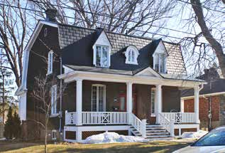

Mansard-roofed house of Second Empire influence La maison à mansarde d'influence Second Empire

© Ville de Saint-Lambert / Patri-Arch (G. Mongrain, M. Dubois), Répertoire des courants architecturaux, fiche 2

© Ville de Saint-Lambert / Patri-Arch (G. Mongrain, M. Dubois), Répertoire des courants architecturaux, fiche 2
Two storeys under a mansard: the steep lower slope carries the dormers, the gallery has its own little roof, and the woodwork on dormers and eaves is where the money went. Sometimes the gable turns to face the street; sometimes a turret makes it bourgeois.
Second Empire (Napoléon III, 1852–70) reached North America through the United States around 1870, first on public buildings, then on prosperous houses, then on modest ones for which "son influence se limite au toit mansardé", a roof whose broken slopes give more room upstairs for large families.
| Tenure / plan | single-family |
|---|---|
| Storeys | 2 |
| Roof form | mansard |
| Roof pitch | – |
| Window proportion | vertical |
| Principal cladding | clay-brick, roughcast, wood |
| Roofing | see materials |
| Garage | none |
| Lot width | – |
| Front setback | – |
| Side setback | – |
| Front yard green | – |
What Répertoire des courants architecturaux says about this type
- Well represented in Saint-Lambert over a long period, about 1875 to 1925; variants with two- or four-slope mansards, semi-detached pairs, and from the early 20th century a gable-to-street model; some dressed up as bourgeois houses with turrets and gables.
- Rectangular body of two storeys, moderately raised above the ground; mansard (broken) roof with two or four slopes; the gable wall may face the street.
- Wood gallery sheltered by an awning independent of the main roof; a brick chimney generally on the roof.
- Corps de bâtiment rectangulaire de deux étages, moyennement exhaussé du sol. Toit mansardé (ou brisé) à deux ou à quatre versants. Le mur pignon peut être orienté vers la rue.
- Une galerie en bois est protégée par une toiture indépendante (auvent) du toit principal. … Une cheminée en brique est généralement présente sur le toit.
- Decorative woodwork on the gallery, the dormers and the roof edges; on wood- or light-clad houses, chambranles around openings and corner boards.
- Des boiseries décoratives ornent la galerie, les lucarnes et les rives de la toiture. Pour les résidences revêtues de bois ou d'un matériau léger, on retrouve couramment des planches de finition, appelées chambranles, autour des ouvertures ainsi que des planches cornières aux angles des murs.
- Traditional wood doors with glazing.
- Two-leaf wood casements with six large panes, or guillotine windows.
- Dormers of various shapes piercing the steep lower slope (brisis).
- Portes en bois traditionnelles avec vitrage.
- Fenêtres à deux battants en bois munies de six grands carreaux ou fenêtres à guillotine.
- Lucarnes de différentes formes qui percent la partie basse et abrupte de la toiture (brisis).
- Brick, roughcast or wood walls.
- Roof: traditional sheet metal (à baguettes, pincée, à la canadienne) or slate; galvanised traditional metal can be repaired and repainted.
- Pour les murs extérieurs en brique, aucun matériau d'imitation n'est acceptable. … Pour la toiture, la tôle traditionnelle (à baguettes, pincée ou à la canadienne) et l'ardoise sont à privilégier.
- No imitation brick; do not paint masonry; identical replacement for roughcast/wood; industrial claddings proscribed; asphalt shingle, industrial-look metal and synthetics proscribed on the roof.
- Do not remove or resize the gallery; painted wood railings of traditional make.
- Steel/PVC doors unsuitable; avoid sliding, single-leaf crank, undivided, aluminium or PVC windows.
- Do not raise foundations or change roof pitch; side/rear reduced-volume additions only.
Same word elsewhere
- Garden City House (Town of Mount Royal)
- Faubourg House (Town of Mount Royal)
- Canadian House (Town of Mount Royal)
- New England House (Town of Mount Royal)
- Georgian House (Town of Mount Royal)
- English Manor House (Town of Mount Royal)
- Bungalow (Town of Mount Royal)
- Cottage (Town of Mount Royal)
- Split-Level (Town of Mount Royal)
- Prairie House (Town of Mount Royal)
- Faubourg house (Le Plateau-Mont-Royal (borough of Montréal))
- Detached urban house (Le Plateau-Mont-Royal (borough of Montréal))
- Row urban house (Le Plateau-Mont-Royal (borough of Montréal))
- Traditional French and Québécois house (Saint-Lambert)
- Queen Anne style house (Saint-Lambert)
- Boomtown house with false mansard (Saint-Lambert)
- Boomtown house with crown (parapet or cornice) (Saint-Lambert)
- Cubic (Four Square) house (Saint-Lambert)
- House of Arts and Crafts influence (Saint-Lambert)
- The modern house (including the bungalow) (Saint-Lambert)
Same form elsewhere
- –
Same period elsewhere
- Family A company houses (models A1–A8) (Arvida (borough of Jonquière, Saguenay))
- Family B company houses (models B1–B4) (Arvida (borough of Jonquière, Saguenay))
- Family C company houses (models C1–C6) (Arvida (borough of Jonquière, Saguenay))
- Family D company houses (models D1–D5) (Arvida (borough of Jonquière, Saguenay))
- Families E, G, H, J, K, L, N, Y and Z (Arvida (borough of Jonquière, Saguenay))
- Garden City House (Town of Mount Royal)
- Faubourg House (Town of Mount Royal)
- Faubourg Apartment Block (Town of Mount Royal)
- Canadian House (Town of Mount Royal)
- New England House (Town of Mount Royal)
- New England Apartment Block (Town of Mount Royal)
- Georgian House (Town of Mount Royal)
- English Manor House (Town of Mount Royal)
- Faubourg house (Le Plateau-Mont-Royal (borough of Montréal))
- Detached urban house (Le Plateau-Mont-Royal (borough of Montréal))
- Duplex without front setback (Le Plateau-Mont-Royal (borough of Montréal))
- Duplex with front setback (Le Plateau-Mont-Royal (borough of Montréal))
- Duplex with exterior stair (Le Plateau-Mont-Royal (borough of Montréal))
- Triplex with interior stair (Le Plateau-Mont-Royal (borough of Montréal))
- Triplex with exterior stair (Le Plateau-Mont-Royal (borough of Montréal))
- Multiplex (Le Plateau-Mont-Royal (borough of Montréal))
- Row urban house (Le Plateau-Mont-Royal (borough of Montréal))
- Apartment block without courtyard (Le Plateau-Mont-Royal (borough of Montréal))
- Apartment block with courtyard (Le Plateau-Mont-Royal (borough of Montréal))
- Small apartment building (Le Plateau-Mont-Royal (borough of Montréal))
Same style elsewhere
- Detached urban house (Le Plateau-Mont-Royal (borough of Montréal))
- Duplex with front setback (Le Plateau-Mont-Royal (borough of Montréal))
- Row urban house (Le Plateau-Mont-Royal (borough of Montréal))
- Boomtown house with false mansard (Saint-Lambert)